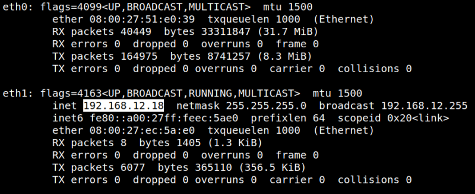

Hacksudo 1.0.1
▸ Hacksudo 1.0.1
▸ 1. Scan Network
▸ 2. Finding Services and Ports
▸ 3. Enumerate
▸ 4. Explotiation
▸ 4.1 Tomcat getting a shell
▸ 4.2 Gettiing the First flag
▸ 4.3 Getting user’s shell
▸ 4.3.1 Steganography
▸ 4.3.2 Deciphering hash with Cyberchef
▸ 4.3.3 Connecting via SSH (Second flag)
▸ 4.4 Gettin hackudo's shell (Third flag)
▸ 5. Privilege Escalation
▸ 5.1 Running shell commands. (Fourth flag)
Difficulty: Medium.
Flag: 4 flags.
Learning:
• Reconnaissance
Scan Network
Find services
• Enumerate
Tomcat Server.
• Exploitation
Getting a shell with Metasploit
Steganography
Decipher hash with Cyberchef and crackstation.net
Connect via SSH
• Privilege Escalation
Get root shell with GTFOBins
• Download (Mirror): https://download.vulnhub.com/hacksudo/hacksudo1.1.zip
• Download (Torrent): https://download.vulnhub.com/hacksudo/hacksudo1.1.zip.torrent
Install the machine on VirtualBox:
1. Download the file.
2. On Virtualbox choose File->Import Appliance.
3. Select the file “ova”.
4. Accept to import.

Watch your Machine IP.
$ ifconfig
Output:

Diagram